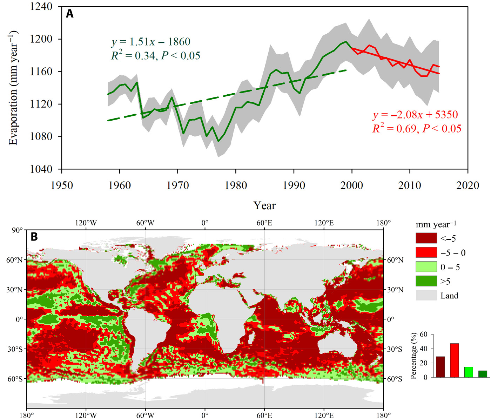

11 Vegetation
Harvey on Yuan
Declining plant growth is linked to decreasing air moisture tied to global warming
The world is gradually becoming less green, scientists have found. Plant growth is declining all over the planet, and new research links the phenomenon to decreasing moisture in the air—a consequence of climate change.
The study published yesterday in Science Advances points to satellite observations that revealed expanding vegetation worldwide during much of the 1980s and 1990s. But then, about 20 years ago, the trend stopped.
Since then, more than half of the world’s vegetated landscapes have been experiencing a “browning” trend, or decrease in plant growth, according to the authors.
Climate records suggest the declines are associated with a metric known as vapor pressure deficit—that’s the difference between the amount of moisture the air actually holds versus the maximum amount of moisture it could be holding. A high deficit is sometimes referred to as an atmospheric drought.
Since the late 1990s, more than half of the world’s vegetated landscapes have experienced a growing deficit, or drying pattern.
The declines challenge an argument often presented by skeptics of mainstream climate science to downplay the consequences of global warming: the idea that plants will grow faster with larger amounts of carbon dioxide. The argument hinges on the idea that food supplies will increase.
It’s largely a red herring, as climate scientists have patiently explained for years. Rising CO2 does benefit plants, at least up to a point, but it’s just one factor. Plants are also affected by many other symptoms of climate change, including rising temperatures, changing weather patterns, shifts in water availability and so on.
Harvey (2023) Earth Stopped Getting Greener 20 Years Ago
Yuan Abstract
Atmospheric vapor pressure deficit (VPD) is a critical variable in determining plant photosynthesis. Synthesis of four global climate datasets reveals a sharp increase of VPD after the late 1990s. In response, the vegetation greening trend indicated by a satellite-derived vegetation index (GIMMS3g), which was evident before the late 1990s, was subsequently stalled or reversed. Terrestrial gross primary production derived from two satellite-based models (revised EC-LUE and MODIS) exhibits persistent and widespread decreases after the late 1990s due to increased VPD, which offset the positive CO2 fertilization effect. Six Earth system models have consistently projected continuous increases of VPD throughout the current century. Our results highlight that the impacts of VPD on vegetation growth should be adequately considered to assess ecosystem responses to future climate conditions.

Figure: Comparison of oceanic evaporation (Eocean) trends during the two periods of 1957–1998 and 1999–2015. (A) Time series of globally averaged oceanic evaporation. (B) Spatial pattern on differences of oceanic evaporation trends between 1999–2015 and 1957–1998. Gray shaded area in (A) indicates ±1 SD. The inset in (B) shows the frequency distributions of the corresponding differences.
Our results support increased VPD being part of the drivers of the widespread drought-related forest mortality over the past decades, which has been observed in multiple biomes and on all vegetated continents. Increased VPD may trigger stomatal closure to avoid excess water loss due to the high evaporative demand of the air leading to a negative carbon balance that depletes carbohydrate reserves and results in tissue-level carbohydrate starvation. In addition, reduced soil water supply coupled with high evaporative demand causes xylem conduits and the rhizosphere to cavitate (become air-filled), stopping the flow of water, desiccating plant tissues, and leading to plant death. Enhanced VPD limits tree growth even before soil moisture begins to be limiting.
Most terrestrial ecosystem models cannot capture vegetation responses to VPD. Thus, problems reproducing the observed long-term vegetation responses to climate variability may challenge their ability to predict the future evolution of the carbon cycle.
The results of our analysis suggest that this projected increased VPD might have a substantially negative impact on vegetation.
[Yuan (2023) Increased atmospheric vapor pressure deficit reduces global vegetation growth](